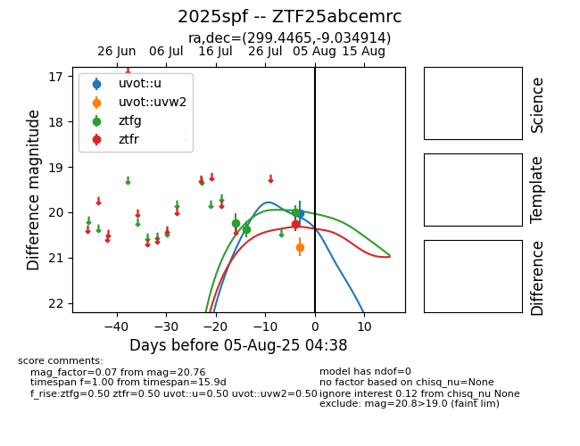

Target 2025spf at 2025-08-05 04:38, see:
FINK: fink-portal.org/2025spf
Lasair: lasair-ztf.lsst.ac.uk/objects/2025spf
ALeRCE: alerce.online/object/2025spf
TNS: wis-tns.org/object/2025spf
YSE: ziggy.ucolick.org/yse/transient_detail/2025spf
alt names
ZTF25abcemrc (ztf,fink)
2025spf (tns,yse)
coordinates:
equatorial (ra, dec) = (299.4465,-9.03491)
galactic (l, b) = (32.2537,-18.81541)
photometry
last uvot::u=20.02, uvot::uvw2=20.76, ztfg=19.99, ztfr=20.25
1 uvot::u, 1 uvot::uvw2, 3 ztfg, 1 ztfr detections
